Version 0.1.0 features experimental functions to display different kinds of flow diagrams.
These are not stable but already useful and since developing flow takes time I though it’d be useful to release them as they are for the time being. Please report issues or upvote existing ones on github if you’d like to see more work happening there.
flow_view_vars()
flow_view_vars() shows dependencies between variables in
a function, this kind of functions cannot be made completely robust but
seems to work quite well if you don’t use assign and don’t
reuse variable names all over the place.
Full lines are direct dependencies, dashed lines are dependencies through control flow. Variables are repeated when they are modified.
Let’s test it on tidyselect::ends_with
tidyselect::ends_with
#> function (match, ignore.case = TRUE, vars = NULL)
#> {
#> check_match(match)
#> vars <- vars %||% peek_vars(fn = "ends_with")
#> if (ignore.case) {
#> vars <- tolower(vars)
#> match <- tolower(match)
#> }
#> length <- nchar(vars)
#> flat_map_int(match, ends_with_impl, vars, length)
#> }
#> <bytecode: 0x5648a2ea0c70>
#> <environment: namespace:tidyselect>
flow_view_vars(tidyselect::ends_with)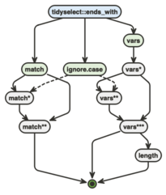
If we don’t want to repeat the variable we can set
expand = FALSE, the resulting diagram doesn’t reflect the
sequence of modifications but sums up dependencies more clearly as it is
more compact.
flow_view_vars(tidyselect::ends_with, expand = FALSE)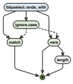
Use the out argument to export these diagrams.
flow_view_deps()
flow_view_deps() shows dependencies between functions in
a package.
Exported functions are blue, unexported are yellow, the number of lines of code is indicated between brackets (useful to detect small helpers).
By default functions called from other non base packages are shown but don’t create new nodes.
flow_view_deps(tidyselect::ends_with)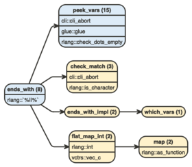
We can collapse those to show only packages :
flow_view_deps(tidyselect::ends_with, show_imports = "packages")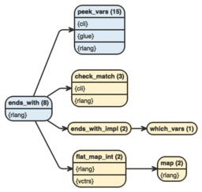
Or not show those at all :
flow_view_deps(tidyselect::ends_with, show_imports = "none")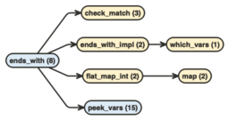
There are many ways to tweak the output, in particular we can :
flow_view_deps(tidyselect::ends_with, promote = "purrr::map")
flow_view_deps(tidyselect::ends_with, demote = "peek_vars")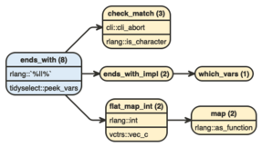
flow_view_deps(tidyselect::ends_with, hide = c("peek_vars", "purrr::map"))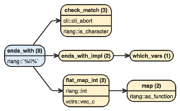
flow_view_deps(tidyselect::ends_with, trim = "peek_vars")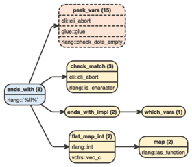
Use the out argument to export these diagrams.
flow_view_shiny()
#’ This function displays a shiny app’s module structure, . If you
call for instance flow_view_shiny() on a function that runs
the app and #’ uses both the main server and ui functions, you’ll
display the full graph of server and ui modules.
flow_view_shiny() is a wrapper around
flow_view_deps() to show the structure of a shiny app. It
assumes the app is built on top of module functions named a certain way
(adjustable through the pattern argument).
It works nicely on apps built with {golem} or follow the same kind of structure (good practice basically), such as those that you’d build following the recommendations in Hadley Wickham’s “Mastering Shiny”.
Apps that use source() are not well supported but it
might come as we found it’s quite common (though probably not good
practice).
Here’s an example using the great {esquisser} app.
flow_view_shiny(esquisse::esquisser, show_imports = "none")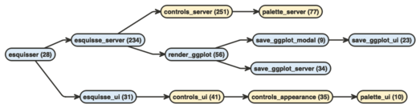
Use the out argument to export these diagrams.
flow_view_uses()
flow_view_uses() is basically
flow_view_deps() in reverse, it shows all functions that
call directly or indirectly on another function. It is not very robust
yet but it’s already useful.
flow_view_uses(purrr:::accum_index)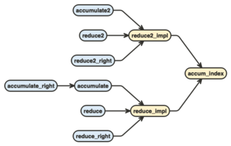
flow_compare_runs()
flow_compare_runs() compares two calls to the same
function.
Whenever the calls diverge we color the blocks differently (orange
for x, green for the ref) and we count
separately the passes on the edges.
flow_compare_runs(rle(NULL), rle(c(1, 2, 2, 3)))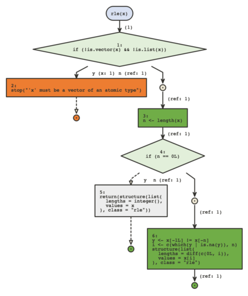
flow_embed()
flow_embed() can be used to embed flow diagrams into
your roxygen documentation
#' Add or subtract
#'
#' This is a useless function that adds or subtract numbers
#'
#' See its logic in this flow diagram:
#'
#' `r flow_embed(flow_view(add_or_subtract), "add_or_subtract")`
#'
#' @param x string
#' @param y string
#' @param what "add" or "subtract"
add_or_subtract <- function(x, y, what = c("add", "subtract")) {
what <- match.arg(what)
if (what == "add") {
x + y
} else {
x - y
}
}